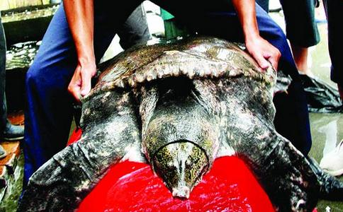

《鲁中晨报》2009年7月6日报道,淄博市张店区南郊蔬菜批发市场水产货区有人在售买两只罕见的巨鳖!两鳖一现身就引起了很多市民的围观和议论。这两只巨鳖是一公一母,母鳖体长约80厘米,体重65斤;公鳖体长约60厘米,体重50多斤,极为罕见!
该摊档老板姓孟,据他说这两只大鳖是朋友在微山湖捕获的,托他在这代卖。捕捉这两只鳖的时候,母鳖撕破了几张大网,费了好大力气才捉上来!母鳖背部的几个洞,就是在捕捉时用鱼叉刺透的。公鳖其实并未捉住,但见母鳖被抓之后,不离不弃,并未逃走,可谓有情有义!渔夫也没客气,一起拿下。干了十几年活鱼生意的老孟说,一般市面上能达到十几斤重的鳖已经十分难得,这两只特大鳖实属罕见!老孟推测它们的年龄都应在几百岁以上,尤其是这只母的,最少也得有300岁。消息见报后,淄博及外地很多酒店都闻风而来询问价格,打算购买。我们也迅速赶往市场想买下
怎么才能既省钱又救下这两只大鳖?放生会与各酒店展开了一场争夺战! 如果这两只大鳖属于国家保护动物,有关部门就可以直接查扣并放生!因此我们首先找到林业局,有关领导非常重视,亲自赶到现场查看,但表示无能为力,因为水生动物的保护由水利局负责!为慎重起见,我们找到淄博电视台、鲁中晨报、淄博经济广播电台三家媒体,一同前往淄博市水利局反映此事。通过网上图片对比及咨询有关专家,我们认为这两只巨鳖是国家一级保护动物:鼋。因为宁波象山玉泉寺僧人曾放生过一只一模一样的巨鳖,重66斤,价格11万元,基本确定为鼋。山东理工大学生命科学院高教授也十分确认这是两只鼋,因为他在苏州某园林见过实物!水利局也很重视,立即将图片上传到山东省水利厅,但水利厅专家研究后却认为只是普通的野生大鳖,没有足够的证据进行查扣!经过反复协调,水利局最后只给卖鳖老板下了个通知,告知两鳖是疑似国家保护动物,令其暂停售卖,等确认后再说。
7月6日我们为救两只大鳖整整奔走了一天。当晚我梦见黑暗中在路上行走,突然出现一中年妇女求救,我当时非常恐惧,一边
赶到市场时,卖鳖人已偷偷与某酒店谈好,以2.6万元价格将两鳖卖给该酒店,并准备交易!放生会彭师兄曾有过黑社会背景,但已接触
半个月后,放生会再次到放鳖水库放生鲤鱼,潘师兄挺想念那两只大鳖也来参加。众人惊奇的发现,他的座驾已由原来的帕萨特换成了一辆奔驰越野350!我和他开玩笑说:“就算你放了两只大鳖,感应也不用这么快吧!”。经询问得知在放生大鳖后半个月,潘师兄持有的几只股票全部暴涨,清仓后共获利100多万元!他原来就想换车,但没想到这次能赚这么多!于是从青岛订购了这辆奔驰越野,办完手续后正好花费大约100万!因为放生经常要走崎岖山路,为方便起见特意选择了奔驰越野。开着奔驰放生,也算是我放生生涯中不太多见的一道风景了!潘师兄平时经营燃料油贸易,业余时间炒股,已炒了十几年,算是老股民了。其间和大多数股民一样,也是有赔有赚、时喜时愁,但这次的获利非常干净利索,有如神助!受此启发,我又打电话问参与放鳖的彭师兄近况如何?老彭大笑说放鳖后诸事顺利,心情超爽!又窃笑着告诉我,卖鳖的孟老板,十天之内莫名其妙平地摔了六跤,最后一跤比较严重,现在还躺在床上起不来!而他捉鳖的朋友,在卖鳖后次日就因故被我们这贾庄派出所请去,罚款5000元!以后还不知道会再碰上什么事!
放生鲤鱼间隙,老潘等几人开着车绕水库转圈,盼望能再见见他的大鳖,竟真的在上次放生位置的湖对面看到了它们!一大一小联袂而来,逗留片刻后转身消失在茫茫湖水中......该水库面积9000多亩,那一刻却能跨越时空,再度相见,何其难得!老潘唏嘘之余,大叹与这两只大鳖确有宿缘!
7月11日,淄博一大型水库,本报7月7日09版报道的两只特大甲鱼,在淄博动物保护爱心人士的努力下,终于回到了大自然的怀抱。
7月7日,本报报道见报当天,淄博市水产管理处工作人员立即赶到现场进行查看,通过咨询省内外数名专家并参考有关资料,最终确定这只是普通甲鱼,不是国家保护动物。7月8日,动物保护爱心人士潘先生、彭先生等人赶到市场,经过与鱼商协商,最终以1.2万元的价格将两只甲鱼买下。昨天上午,数十位动物保护爱心人士冒雨驱车数十公里,共同见证了这两只甲鱼回归自然的过程。